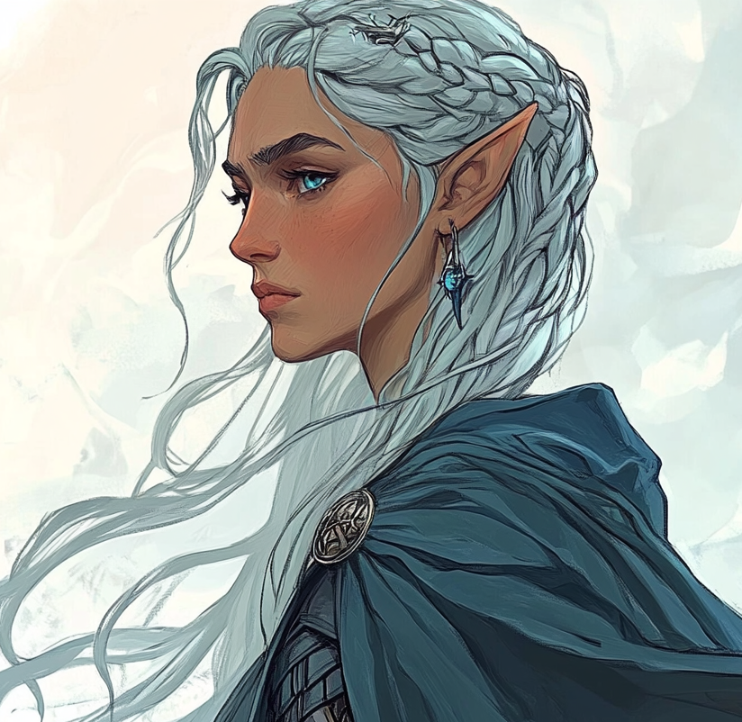

Scholar of the Grey Havens · Of Círdan's Circle · She Who Came East with the Adamant Relic · Bearer of the Bow That Did Not Need To Be Drawn

Silver-haired in the manner of the long-lived, her hair worked into a coronet of braids that catch the light from above. Sea-grey eyes; a single shard-shaped earring of star-blue stone. A blue cloak the colour of deep water, clasped at the shoulder with a silver brooch in the Lindon pattern. Lean, light, deliberate. The bow at her back is recently-strung; the buckler on her arm shows the marks of practice rather than display.
She watches before she speaks, and what she says has often been thought about for some while.
Eryndil is an Elf of Lindon, of Círdan's intellectual household at Mithlond — one of the scholars who maintain the long memory of the Grey Havens against the slow erosion of the world. Her vocation is the recovery of what Númenor left behind on Middle-earth's western shores: the warded ruins, the maritime guilds, the half-remembered names that the Dúnedain themselves have begun to forget. She came east to find a Dúnedain heir whose blood would open one of those wards. She found Celenneth at the Angle, and waited under a stand of birches until the family decided to follow her west.
The chronicle describes her plainly: sea-grey eyes, shell-beads in her hair, a blue cloak that catches light like water. She moves with the elven economy that does not telegraph effort. Her courtesy is grave rather than warm; she meets sorrow with sorrow's own register, as she did with the widow Almedra, condolences offered before requests. She is not Mirkwood's Eryndor or Thranduil's playful court. She is Lindon's quieter register — patient, weighty, the bearing of someone who has stood at the edge of the sea for centuries and learned to wait.
That she is gracious. That she is patient — she camped under birch trees outside the Angle and did not press the family. That she is precise — her arrows do not miss, her readings of the Elvish script are exact, her recognition of Almedra's grief was correct on the first attempt. And, more quietly: that she made a decision Celenneth would not have made, alone, on a road, around a bend, and rode forward without expression. The chronicle has not yet decided whether that decision was wisdom or wound. Eryndil herself appears to have decided.
To bring the heir of Arnor to the warded threshold and recover what the Sea-Guild left behind. Current calling — Scholar
To answer for the arrow, if and when it is asked of her; and to refuse to apologise for it if it is not. Current heart — the unresolved thing in the cabin of the Eärlindë
We see you. We are merely passing through. To the bear on the road; her doctrine in five words
Treasure can be knowledge, too. At the Númenórean ruin, watching Brynja gather pottery shards
The shadow does not yield to mercy. The mercy is for ourselves. Unspoken; the chronicle has not put it in her mouth, but it is the argument the arrow made
A balanced elven build with the scholar's emphasis. Strength and Wits at 5 each — the body and the mind in equilibrium. Heart at 4 is the lowest, and the chronicle has been careful about it: Eryndil's affection is real but allocated, not freely given. She names the family as such only after Celenneth invites her. The build's argument is that she is competent at the road, the page, and the bow — and that her vulnerability is in the register where one would expect an elven companion to be most resilient.
Valour and Wisdom both at 1 is the chronicle's clearest mechanical statement that she is specialist, not paragon. She is neither the warrior of her crew nor the sage; she is the scholar with a bow. Fellowship 4 ties her to the family she has bound to. Treasure 0 confirms the Frugal standard of living — she has no household, no holdings, no purse beyond what the errand requires. Her wealth is in vellum and scrolls and the lore she keeps in her head.
Hope at maximum, Endurance at maximum, no Scars yet on the sheet. The chronicle's honest assessment of her present state: the road from Lindon to the Angle and back to Mithlond has not yet cost her measurable Shadow. The arrow paid no Shadow she will admit to. The voyage ahead will test what the Lure of Secrets does to a Hope reservoir of fourteen.
| Cultural Blessing | Elven-Skill. The fine-grained competence of the long-lived: bowstring strung true, knotwork that holds, the eye that reads what mortals miss. Eryndil's competence in the open field has never been about training accumulated over years; it is the elven gift made operational. |
| Calling | Scholar. Not warrior, not messenger, not warden. She is here because there are things still hidden on Middle-earth's western shore that require finding, naming, and bringing into the light — or, in some cases, sealing again with the right knowledge before the Shadow finds them. The Calling is the chronicle's signal that she will not be the one who fights the warded ruin's keepers; she will be the one who knows what they are. |
| Distinctive Features | Fair. Keen-Eyed. Wise. The three features stack in a single direction: the elven gift made specific. Fair as the elves are fair, by definition rather than achievement. Keen-Eyed as the bow's keystone and the scout's gift. Wise as the long memory made operational across every council the chronicle has shown. |
| Shadow Path | Lure of Secrets. The scholar's specific vulnerability. The temptation to acquire the knowledge that should not be acquired — to open the warded thing because the warding is what makes it interesting, to follow the trail of names because a name unfound is a name lost. The chronicle has built her doctrine in tension with this Path. She is going to need to refuse it at the threshold of the very ruin she came east to open. |
| Weapon Group | Rating | Associated | Notes |
|---|---|---|---|
| Bows | 3 | Wits | Primary weapon. The Keen reward sits on the bow itself. Her arrows do not miss. The arrow loosed at the released prisoner went exactly where she intended; the chronicle made this clear by not pretending otherwise. |
| Swords | 1 | Heart | Trained but unused. The blade is for when the bow has been put down and the matter is unavoidable. |
| Spears | 0 | Wits | Untrained. |
| Axes | 0 | Strength | Untrained. |
◆ indicates a Favoured skill.
| Awe | 3 |
| Athletics | 3 |
| Awareness | 3 |
| Hunting | 0 |
| Song | 2 |
| Craft | 2 |
| Enhearten | 0 |
| Travel | 0 |
| Insight | 2 |
| Healing | 2 |
| Courtesy | 2 |
| Battle | 0 |
| Persuade | 0 |
| Stealth | 3 |
| Scan | 1 |
| Explore | 1 |
| Riddle | 2 |
| Lore | 3 |
The four Favoured skills — Song, Craft, Riddle, Lore — are the scholar's entire register made explicit: the singer of the old lays, the maker who reads makers' marks, the riddler who knows what the inscription means, the loremaster proper. Lore at 3 Favoured is the build's keystone. Awe, Athletics, Awareness and Stealth all at 3 (non-Favoured) constitute the elven physical baseline she did not need to train for. Persuade, Enhearten, Battle, Hunting, Travel all at 0 are not omissions; they are who she is. She does not lead, she does not exhort, she does not command the line of battle, she does not hunt, and the road bores her — what interests her is what is at the road's end. Insight 2 and Courtesy 2 are the operational minimum for moving through mortal company; they are sufficient and no more.
| Virtue / Reward | Type | Effect |
|---|---|---|
| Confidence | Cultural Virtue | +2 maximum Hope. The elven reservoir against Shadow's slow argument. The Hope ceiling of 14 already includes it; without Confidence, the buffer against the Lure of Secrets would be visibly thinner. |
| Keen (Bow) | Reward | The bow's permanent cutting edge. The arrow that found the released prisoner around the bend in the road was a Keen arrow. The arrow that will end whatever the warded ruin sends against the family will likely also be Keen. |
A sparse rewards sheet — exactly two entries — and that sparseness is the build's other argument. Eryndil is the chronicle's newest companion. She has not had the chapters in which to acquire the long inventory of Virtues that Celenneth and Linnea have accumulated. She is being introduced at the chronicle's pivot and will earn her further Virtues in the sea arc itself. The next likely purchases would be a second Cultural Virtue — Mariner's Eye, Fair Form, or a similar Lindon-appropriate option — and a Reward that recognises the Adamant Relic she carries.
| Adventure Points (current) | 0 |
| Skill Points (current) | 0 |
| Treasure | 0 |
The freshly-introduced character at the start of her arc with this party. The chronicle has not yet given her the Yules and Fellowship phases that would have built up her bank. The voyage west is her first true adventure with this Fellowship; the points will accumulate from here.
| Item | Damage | Injury | Load | Notes |
|---|---|---|---|---|
| Bow | 3 | 14 | 2 | Lindon-pattern; longbow, two-handed; Keen. Wits-keyed under the Bows proficiency at rank 3. The chronicle's repeated phrase for it is one fluid motion — there is no hesitation between the decision and the loose. The arrow at the released prisoner came from this bow. So did the arrows that opened the road at the Barrow-downs. |
| Unarmed | 1 | — | 0 | The elven hand at need. Has not yet been called on in the chronicle's view. |
| Item | Protection | Load | Notes |
|---|---|---|---|
| Leather Corslet | +2 | 3 | Lindon-made; light, supple, worn beneath the cloak. Designed for the long road and the brief skirmish rather than the pitched field. |
| Buckler | +1 | 2 | A small Elven shield; the archer's secondary defence when the bow has been put down. Marked with the practice of use rather than the polish of display. |
| The Adamant Relic | The object she carried east to the Angle. Set with the maritime motifs of Númenor — waves, stars, ships. The threshold-piece that requires Dúnedain blood to operate. She delivered it to Celenneth's understanding without delivering it to her hand — the chronicle is careful here. The Relic is the errand; Eryndil is its bearer; Celenneth is its key. |
| Almedra's Notebook | The widow Almedra's husband Berthor had kept a notebook of accounts of such things — the warded ruins, the lost guilds, the elven encounters preserved by mortal scholarship. Almedra gave the notebook to Eryndil at the Mithlond visit because the knowledge belongs to the quest now, not to grief. Eryndil carries it in her satchel beside her own maps. |
| Nautical Maps | Annotated in flowing Elvish script; rolled in linen and kept in her dwelling at Mithlond, now stowed aboard the Eärlindë. Charts that include marks the Dúnedain have forgotten and the Sea-Guild knew. The chronicle has shown her referring to them with quiet certainty. |
| Shell-Beads | Worked into her hair; the chronicle's first description of her. Lindon tokens, not amulets — the equivalent of the rings the Rohirrim weave into braids or the runes the Dwarves carry on their belts. Identity worn visibly without being declared. |
| Shard Earring | A single star-blue stone, drop-shaped, in the left ear in the portrait. The kind of mineral the elves call silimaranya or thindel-glas — a glass of starlight worked when the world was younger. |
| The Silver Brooch | The Lindon clasp at her shoulder. Functional and identifying both. |
Eryndil's pack is conspicuously light. No accumulated trove, no rewarded artefacts beyond the Adamant Relic she is bringing as an errand rather than owning, no inherited weapon. Frugal living and Treasure 0 are not poverty; they are choice. She has stripped the load to the minimum required for the errand. The chronicle is showing, by what she does not carry, that she expects to give back what she has been entrusted with — and possibly herself, in the doing.
Her arrival at the Angle is her doctrine in miniature: she camped under birches and let the family decide. The chronicle has aligned this with how its most significant requests arrive — Radagast's prophecy under firelight, Gandalf's silver ring delivered without ceremony — and Eryndil belongs to that register. She does not press. She does not urgency-frame what does not need urgency. The errand has waited centuries; another night will not destabilise it.
The chronicle's most precise account of her operating method came at the bend in the road. Celenneth had judged the prisoner releasable. Eryndil disagreed. She did not argue, did not raise the matter, did not press her case. She waited until the next curve of the road and resolved her disagreement with a single arrow. The doctrine is twofold: she does not contest the captain's decision in the moment, and she does not abandon her own judgement to the captain's authority. Both halves are operational. The chronicle has not condemned her for either, but has not yet absolved her either.
She met Almedra by recognising the widow's grief before any request was made. The chronicle considered this her character more efficiently than pages of description. Her Courtesy register is not the rhetorical kind Linnea operates in; it is the matched-register sympathy of the long-lived who recognise mortal grief without performing surprise at it. She is not warm. She is precise about the warmth required.
We see you. We are merely passing through. Said to the bear on the road, in plain words, as one would address a citizen of the country one was crossing. The doctrine extends to the warded ruin, to the prisoner she chose to remove, to the Adamant Relic she carries: she addresses the world as a place that can be reasoned with, persuaded, or, if persuasion fails, fired upon. The trembling of her hands on the axe handle after the rockfall is the chronicle's reminder that this doctrine costs her; she is not stone.
Almedra's notebook was given to her because the knowledge belongs to the quest now, not to grief. Eryndil's own gift to the quest is the same — the Lindon record, the Sea-Guild's residue, what Mithlond still remembers of the western coast's old workings. She is the conduit by which knowledge that would otherwise have stayed in Círdan's archives reaches a Dúnedain woman with the blood that opens it. The doctrine forbids hoarding what should travel. It is the doctrine in which the Shadow Path of Lure of Secrets is most acutely a trap.
| Círdan the Shipwright | Her Patron. The eldest Elf in Mithlond, the keeper of the Grey Havens, the maker of ships that have sailed since the First Age. He tested Celenneth's knowledge of Arnor in his own voice; he sent Eryndil east when the relic and the lineage were ready to meet. He is not her commander; he is the lord whose household she serves and whose long view she has internalised. |
| The Sea-Guild & the Guild of the Star and Sea | The Númenórean maritime guilds whose ruins still mark the western coast. The Guild of the Star and Sea has been named on a stele Brynja gathered shards beside. Eryndil's scholarship is largely the recovery of these guilds' records — their wards, their workings, the half-forgotten covenants by which they sealed certain harbours and islands against return. |
| Berthor and Almedra | The mortal scholar-couple of Lindon's coast who collected accounts of elven encounters and warded objects across decades. Berthor died the winter before Eryndil came to fetch them; Almedra gave away his notebook because the knowledge belonged forward. They are the chronicle's argument that Eryndil's scholarship is not solely elven; it has been built in collaboration with mortal hands and mortal lifetimes. |
| The Long Memory | The internal library every elf of her age carries: the names, the lineages, the centuries of small observation. She has not been shown to recite from it dramatically; she has been shown to recognise grief, lineage, and rune by it. The training is the body of her existence rather than a curriculum. |
Lindon teaches that the western shore is the world's last threshold against what came out of Númenor's fall and what the First Age left behind. The doctrine is preservation, archive, ward — not the high crusade of Imladris nor the woodland sovereignty of Mirkwood. Eryndil has internalised this fully. She does not see herself as a hero of any narrative. She sees herself as a curator: the Adamant Relic must be returned to its threshold, the warded ruin must be opened by the right blood for the right reason, the knowledge must be passed to the right scholar before its keeper dies. The chronicle's ethics of divestiture rather than accumulation, which Celenneth has been practising for thirteen books, is for Eryndil a cultural assumption rather than an earned discipline.
The arrow at the bend was not malice. It was the conclusion of a calculation Celenneth had not finished making. The prisoner had been released into a wilderness in which the Branded Men's network operates; the calculation Eryndil completed was that he would return to it, report on the family, and contribute to whatever has been tracking them. Her ethics permitted the act. Her doctrine — knowledge owed forward, including knowledge of one's own decisions — does not yet permit her to bring it to Celenneth's face. The chronicle is honest that this contradiction is unresolved, and that Eryndil knows it is.
Heart at 4 is the build's most quietly interesting number. The elves of Lindon have watched many companies pass through Mithlond on their way to ports of no return. Eryndil's lower Heart attribute encodes this: the affection she gives is real and the people she has watched depart are many. She bound to the family at Celenneth's invitation — consider yourself part of the family — and the chronicle noted a rare flicker of vulnerability in her response. Rare. The reservoir is not full and is not meant to be.
| Feature | Detail |
|---|---|
| The Dwelling Itself | Modest. Cedar-scented. Small enough that the family of four shared the single narrow bed while Eryndil took the sofa with graceful acceptance. The dwelling of someone who travels often and lives lightly. |
| Nautical Maps | Annotated in flowing Elvish script; rolled in linen, racked along one wall. |
| Carved Shelves with Shells | The decorative register that is also a working register — many of the shells are reference specimens, not ornaments. |
| The Sofa | Linen-covered, low; took her weight without complaint that one night the family was hers to host. |
| Open Window onto the City | The Lindon songs that carried in. The chronicle's quiet promise that even the elven scholar's spare cell is held inside the music of the Grey Havens. |
The standard of living on the sheet is Frugal, which is one register below Common. For an elf of Lindon's scholarly circle, this is a deliberate choice rather than a constraint. Mithlond would have provided her a more lavish dwelling; she has accepted less. The Lindon doctrine teaches that the scholar who accumulates is a scholar diverted; Eryndil has internalised this. The dwelling and the cleared shelves are her argument made structural.
Her Shadow Path. The scholar's specific vulnerability: the desire to know what should not be known, to open what should remain warded, to retrieve from silence what silence has held safely for an age. The Path is not academic. It is operational. Eryndil is at this moment sailing toward a warded Númenórean ruin that the Sea-Guild explicitly sealed against return, and her role is not to refuse the opening but to assist it — under the supervision of Círdan, with the consent of the heir, for the right reason. The Path's argument against her is that the right reason can always be supplied. The chronicle will press on this.
The sheet records no Shadow Scar from the arrow at the bend. The chronicle's silence on whether the act paid Shadow is itself meaningful. If Celenneth suspected anything, she said nothing. The arrow may have paid no measurable cost because the act was, in Eryndil's understanding, doctrinally correct. Or the cost may be deferred — Shadow registered against the bond with Celenneth, accumulating slowly, surfacing when the cabin's enforced proximity makes the unspoken thing speakable. Either way, the chronicle has not yet adjudicated, and Eryndil herself has not asked it to.
After the rockfall on the road to the Grey Havens, Eryndil's hands trembled on the axe handle when she thought no one was watching. The chronicle's quiet note. She is not stone; she is an elf who has watched the world's slow grinding for centuries and felt the weight of a nearly-buried family. The composure she carries is discipline rather than absence of fear. The Path of the Lure of Secrets will not press hardest on her in the moments she would expect — it will press hardest in the moments after near-disaster, when knowledge offers itself as relief from the helplessness of the body.
Heart 4 is the build's open flank. The Shadow's argument against Eryndil will not be despair (as it is for Linnea) or curse-of-the-cave (as it is for Celenneth). It will be the offer of a single piece of forbidden knowledge that would resolve the immediate crisis at the cost of the deeper one. The chronicle has built her doctrine — knowledge owed forward, Círdan's discipline, the Lindon scholar's vow — in opposition to exactly this offer. The warded ruin is where the offer will be made.
The Eärlindë carries the family, the crew of twelve, the Adamant Relic and the Frostward Key, the cursed dagger Celenneth has not declared, the cursed diadem and Wyrmscale Sigil Linnea carries, the Wolf Clasp, and Eryndil with her sparse rewards sheet and her precise bow. The voyage's length will be measured by the books the chronicle gives it — six to eight, per the chronicle's own conversation with its players. Eryndil's role across that arc has several functions in sequence: the navigator of meaning who reads the warded threshold; the bearer of the Adamant Relic, restored to its place; the scholar who recognises what is found within and decides whether the family is permitted to take it home; and, possibly, the figure who refuses the Lure of Secrets at the cost of what she could have brought back to Mithlond.
| Thread | Status | Likely Convergence |
|---|---|---|
| The arrow at the bend | Unspoken between her and Celenneth | Will be raised — probably by Linnea, possibly by Brynja unknowingly — before the warded threshold; the ethical breach must be addressed before the family can act as one at the ruin |
| The Adamant Relic | In the locked chest aboard the Eärlindë | Will be brought to the warded threshold and operated by Celenneth's blood; Eryndil's role is to recognise the working and to call when to stop |
| The Lure of Secrets | 0 Scars; the Path declared but unactivated | The warded ruin's contents will offer her something she could not have anticipated; the test is whether she takes it |
| Almedra's notebook | In her satchel | The notebook will likely contain the precise inscription she needs at the threshold; Berthor's work paid forward |
| The crew's morale | Functional, professional, not warm | Will be tested by storms and sea-shadows; the warband may not return at full numbers |
| Bond with Celenneth, with Linnea | Recently formed; flicker of vulnerability registered | The voyage's confinement will deepen these or break them; the chronicle has been honest that both are possible |
Where Celenneth's probable end is to leave her work unfinished and to entrust it to the next generation, and Linnea's is to be the chronicle's continuity, Eryndil's probable end is different in register: she is likely to finish her errand and return to Mithlond, or to the West beyond it. The elves are leaving Middle-earth in the long arc the chronicle exists inside; Mithlond is the port from which the leaving happens. Eryndil's role in this family is bounded by the warded ruin's opening and by what the family must do with what they find. Once that is done, she may sail. The chronicle has, throughout, given its elven characters this option in the background.
That she chose this family. That she gave the notebook forward. That her bow ended a man and did not unmake her, but did mark her — the chronicle has not absolved her of the arrow and will not. That she sat on the sofa while a Bree-folk woman and a Dúnedain ranger and two children slept in her narrow bed, and let them. The elves of Lindon do not lightly fold mortals into their lives; Eryndil did.
Whether the warded ruin offers her the secret she came east half-hoping to find. Whether she can refuse it. Whether the bond with Celenneth survives the moment the arrow is finally raised. Whether she sails west when the errand is done, or stays — the chronicle's elves have, on rare occasions, chosen the latter. Whether Brynja and Hallas will remember her in years to come as the elf who taught Brynja to yield with the ship's roll, or as the figure whose blue cloak vanished into a sail's white shadow one morning and did not return.
The Lindon scholar's vocation is to recover, name, transmit, and return. Eryndil has been competent at the first three for centuries. The chronicle's question for her is whether she can complete the fourth — whether what she finds at the warded ruin can be given back to the keeping it was originally meant for, rather than retained, archived, used. Knowledge owed forward. The arc tests the doctrine. The doctrine, if held, releases her.
The ship sails. The coast recedes. The Adamant Relic waits in its locked chest. She is at the rail, and she has not yet looked back.